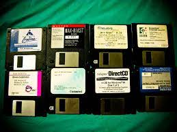

ISP WARS
Before the World Wide Web, many private networks were established. These are
the Internet Service Providers (ISPs) that tried to capture the mass market.

BROWSER WARS
Once the World Wide Web was established, users needed a way to access it.
These are the companies that battled to own the front end of the user experience.
SEARCH WARS
As the amount of content on the Web exploded, users needed a way to
navigate it. These companies used technological and other means to create a road map.